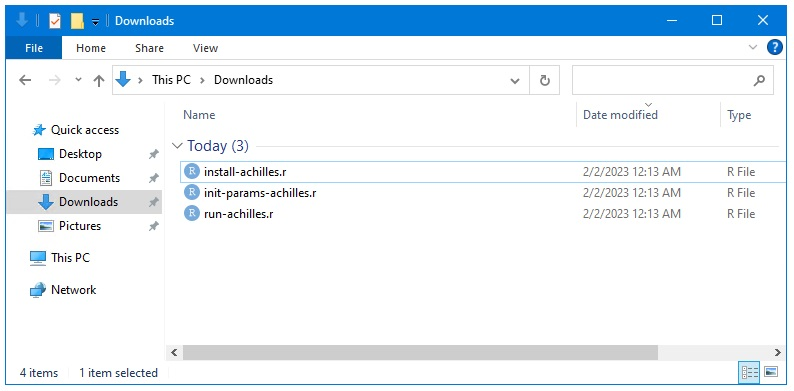
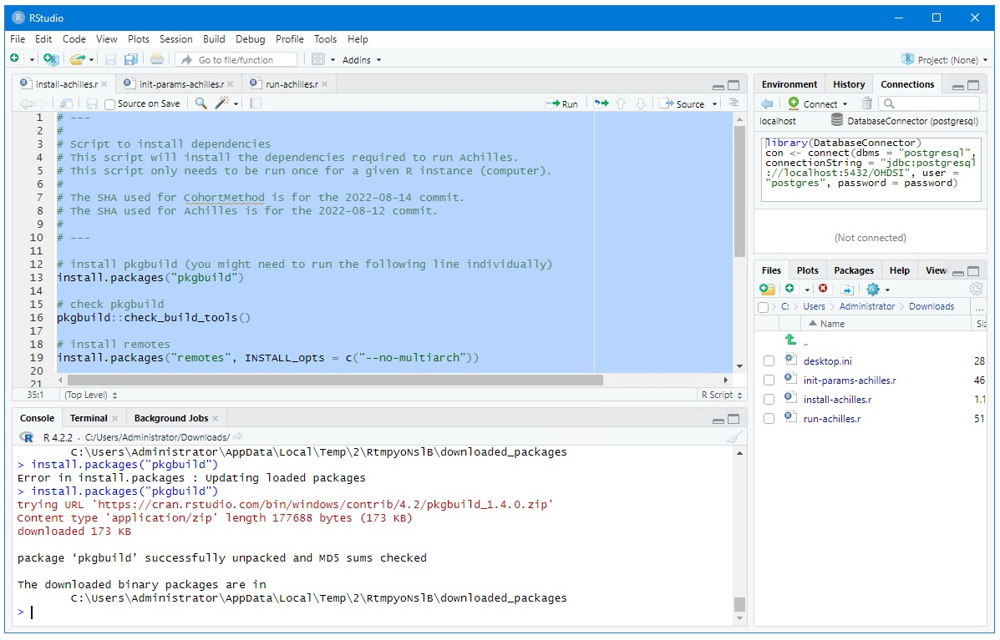
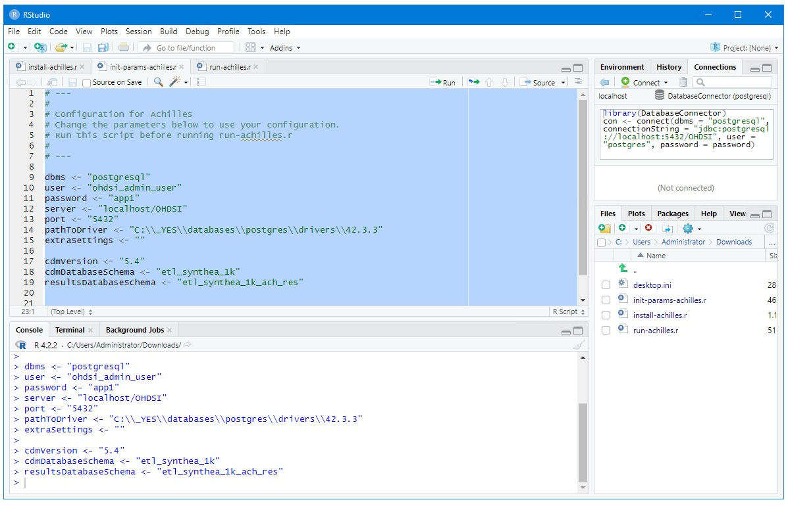
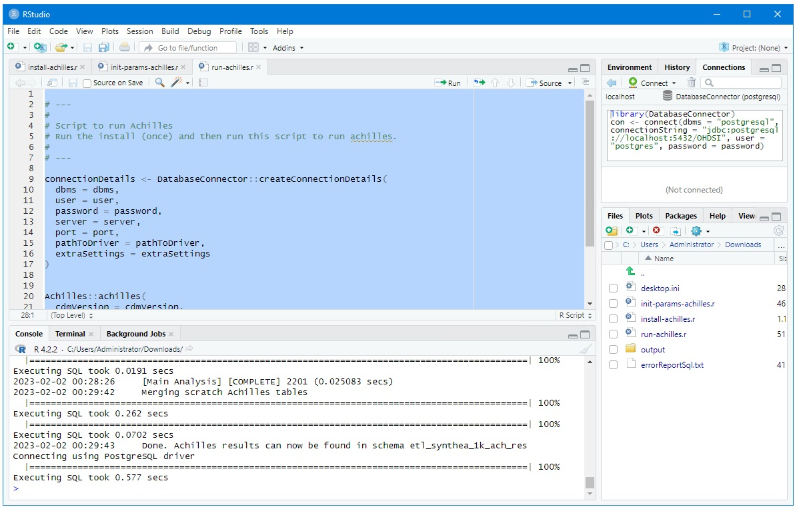

Ponos Quick Start Guide: Run Achilles
Run the install, init-params, and achilles Scripts
Download the three R scripts listed below and run them in the order shown here.

Run install-achilles.r
Open the install-achilles.r script in R, select all, and press the run button.
You will be asked several times if you want to restart R
SELECT NO, DO NOT RESTART R!

Run init-params-achilles.r
Open the init-params-achilles.r script in R, select all, and press the run button.

Run Achilles
Open the run-achilles.r script in R, select all, and press the run button.
